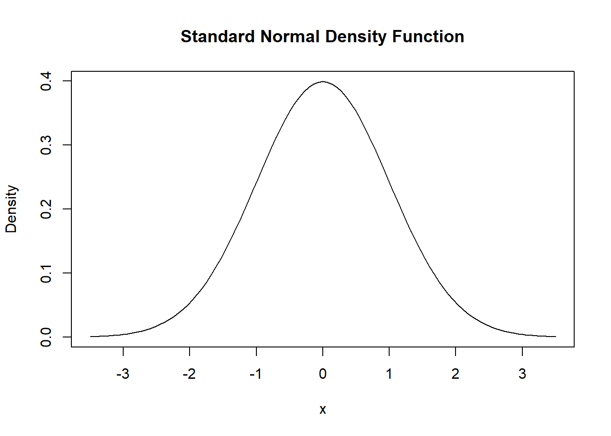

2.1 A General Strategy for Modelling Nonlinear Regression Functions
Let us have a look at an example where in fact using a nonlinear regression function is better suited for the estimation of the population relationship between the regressor, \(X\), and the regressand, \(Y\): the relationship between the income of schooling districts and their test scores.
# Prepare the data
library(AER)
data(CASchools)
CASchools$size <- CASchools$students/CASchools$teachers
CASchools$score <- (CASchools$read + CASchools$math)/2 We start our analysis by computing the correlation between both variables.
cor(CASchools$income, CASchools$score)## [1] 0.7124308The correlation coefficient is about \(0.71\). This means that income and test scores are positively correlated. In other words, children whose parents have an above average income tend to achieve above average test scores. Can we use the correlation coefficient to assess whether a linear regression model does fit the data adequately? To answer this question we visualize the data and add a linear regression line to the plot.
#Fit linear model
linear_model<- lm(score ~ income, data = CASchools)
# Plot observations
plot(CASchools$income, CASchools$score,
col = "steelblue",
pch = 20,
xlab = "District Income (thousands of dollars)",
ylab = "Test Score",
cex.main = 0.9,
main = "Test Score vs. District Income and a Linear OLS Regression Function")
# Add the regression line to the plot
abline(linear_model, col = "red", lwd = 2)
As pointed out in the book, the linear regression line seems to overestimate the true relationship when income is very high or very low and underestimates it for the middle income group.
Fortunately, usage of the OLS estimator is not restricted to linear functions of the regressors. Thus we can for example model test scores as a function of income and the square of income. The corresponding regression model is
\[TestScore_i = \beta_0 + \beta_1 income_i + \beta_2 income_i^2 + u_i.\]
This equation is called the quadratic regression model. Note, that \(income^2\) is treated as an additional explanatory variable. Hence, the quadratic model is a special case of a multivariate regression model. When fitting the model with lm() we have to use the ^ operator in conjunction with the function I() to add the quadratic term as an additional regressor to the argument formula.
# Fit the quadratic Model
quadratic_model <- lm(score ~ income + I(income^2), data = CASchools)
# Generate model summary
coeftest(quadratic_model, vcov. = vcovHC(quadratic_model, type = "HC1"))##
## t test of coefficients:
##
## Estimate Std. Error t value Pr(>|t|)
## (Intercept) 607.3017435 2.9017544 209.2878 < 2.2e-16 ***
## income 3.8509939 0.2680942 14.3643 < 2.2e-16 ***
## I(income^2) -0.0423084 0.0047803 -8.8505 < 2.2e-16 ***
## ---
## Signif. codes: 0 '***' 0.001 '**' 0.01 '*' 0.05 '.' 0.1 ' ' 1The output tells us that the estimated regression function is
\[\widehat{TestScore}_i = \underset{(2.90)}{607.3} + \underset{(0.)}{3.85} \times income_i - \underset{(0.0048)}{0.0423} \times income_i^2.\]
Notice that this estimated model equation allows us to test the hypothesis that the relationship between test scores and district income is linear against the alternative hypothesis that it is quadratic. This corresponds to testing
\[H_0: \beta_2 = 0 \ \ \text{vs.} \ \ H_1: \beta_2\neq0,\]
since \(\beta_2=0\) corresponds to a simple linear equation and \(\beta_2\neq0\) implies a quadratic relationship. We find that \(t=(\hat\beta_2 - 0)/SE(\hat\beta_2) = -0.0423/0.0048 = -8.81\) so the null is rejected at any common level of significance and we conclude that the relationship is nonlinear. This is consistent with the impression gained from inspection of the plotted data.
We can now draw the same scatter plot as for the linear model and add the regression line for the quadratic model. Because abline() can only draw straight lines, it cannot be used for this task. A function which can be used to draw lines without being restricted to straight lines is lines(), see ?lines. The most basic call of lines() is lines(x_values, y_values) where x_values and y_values are vectors of the same length that provide coordinates of the points to be sequentially connected by a line. This makes it necessary to sort the coordinate pairs according to the X-values. Otherwise you will not get the desired result! In this example we use the function order() to sort the fitted values of score according to the observations of income.
# Scatterplot of observation for income and TestScore
plot(CASchools$income, CASchools$score,
col = "steelblue",
pch = 20,
xlab = "District Income (thousands of dollars)",
ylab = "Test Score",
main = "Estimated Linear and Quadratic Regression Functions")
#Add linear function to the plot
abline(linear_model, col = "black", lwd = 2)
#Add quatratic function to the plot
order_id <- order(CASchools$income)
lines(x = CASchools$income[order_id],
y = fitted(quadratic_model)[order_id],
col = "red",
lwd = 2) 
We see that the quadratic model does much better in fitting the data than the linear model.